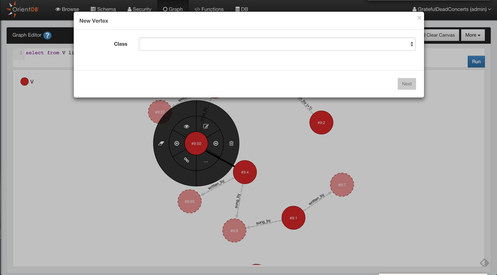
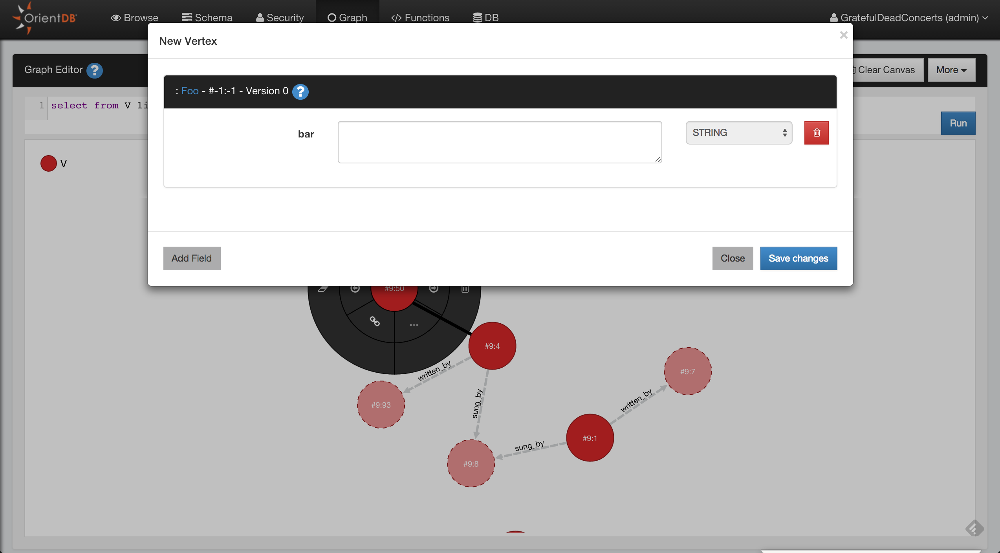
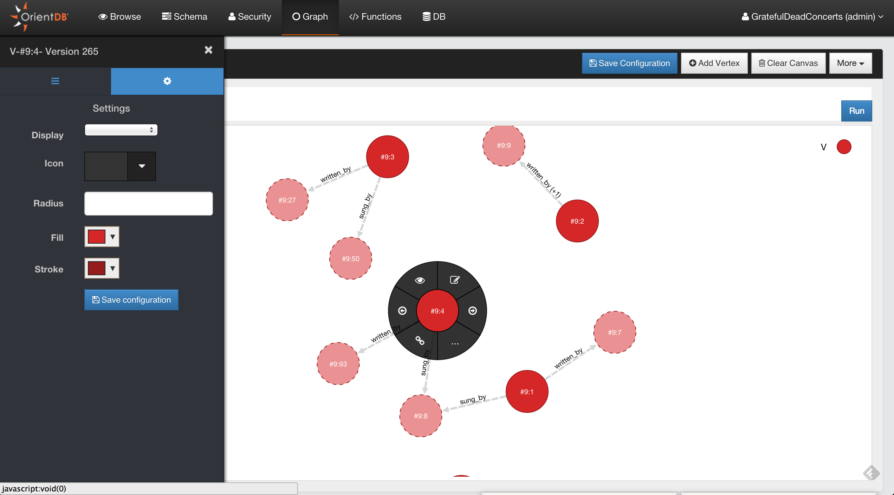

search: keywords: ['Studio', 'graph', 'Graph Editor']
Graph Editor
Since Studio 2.0 we have a new brand graph editor. Not only you can visualize your data in a graph way but you can also interact with the graph and modify it.
To populate the graph area just type a query in the query editor or use the functionality Send To Graph from the Browse UI

Supported operations in the Graph Editor are:
- Add Vertices
- Save the Graph Rendering Configuration
- Clear the Graph Rendering Canvas
- Delete Vertices
- Remove Vertices from Canvas
- Edit Vertices
- Inspect Vertices
- Change the Rendering Configuration of Vertices
- Navigating Relationships
- Create Edges between Vertices
- Delete Edges between Vertices
- Inspect Edges
- Edit Edges
Add Vertices
To add a new Vertex in your Graph Database and in the Graph Canvas area you have to press the button Add Vertex. This operation is done in two steps.
The first step you have to choose the class for the new Vertex and then click Next

In the second step you have to insert the fields values of the new vertex, you can also add custom fields as OrientDB supports Schema-Less mode. To make the new vertex persistent click to Save changes and the vertex will be saved into the database and added to the canvas area

Delete Vertices
Open the circular menu by clicking on the Vertex that you want to delete, open the sub-menu by passing hover the mouse to the menu entry more (...) and then click the trash icon.
Remove Vertices from Canvas
Open the circular menu , open the sub-menu by passing hover the mouse to the menu entry more (...) and then click the eraser icon.
Edit Vertices
Open the circular menu and then click to the edit icon, Studio will open a popup where you can edit the vertex properties.
Inspect Vertices
If you want to take a quick look to the Vertex property, click to the eye icon.

Change the Rendering Configuration of Vertices
